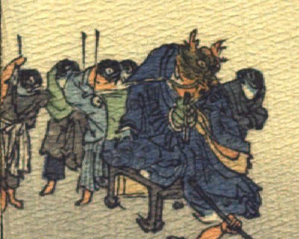

竜王とその側に控える魚の化物たち。竜王の頭部は緑色で、目玉はまるく、口元に長いひげが生えている。額に鹿のような黄色い角を生やしている。青い着物をまとっている。袖からのぞく手は青い。緑色の椅子に腰掛けている。椅子の後ろに4体の魚が立っている。頭部は青く、着物と袴、腰布をまとい、棒状のものを担いでいる。竜王の脇に、着物をまとった魚が1体控えている。
著作者：J.Dautremer／出典：親書誌：U426_nichibunken_0107：La meduse simple et naïve／日付：2006／資源識別子：U426_nichibunken_0107_0008_0001
Copyright (c)2010- International Research Center for Japanese Studies, Kyoto, Japan. All rights reserved.